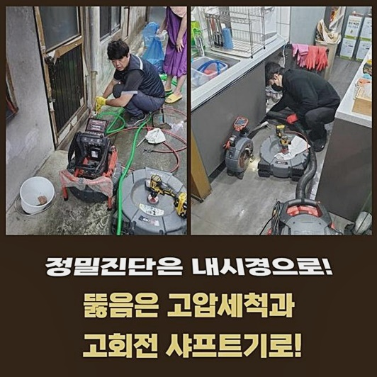
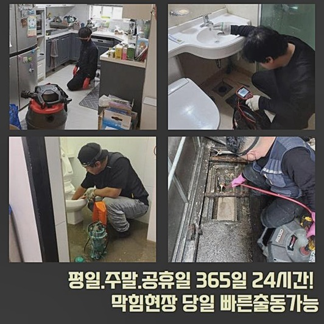
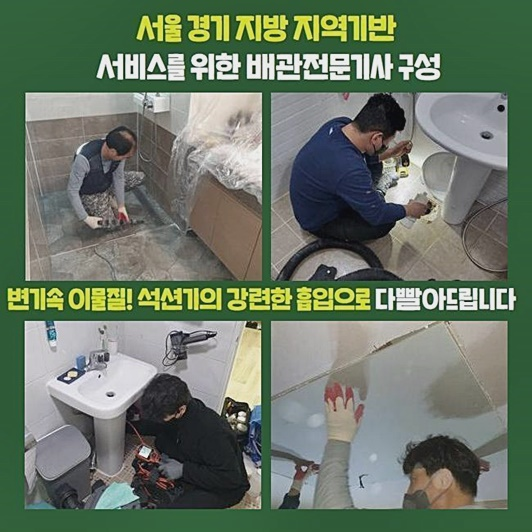
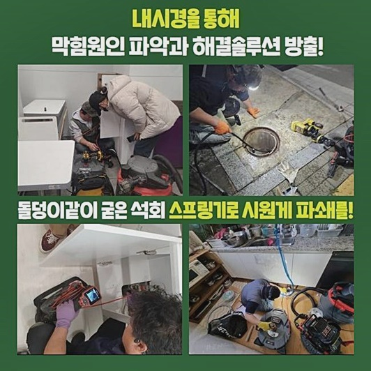
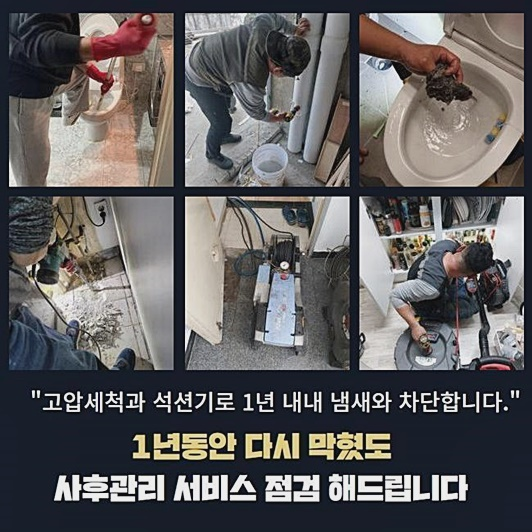
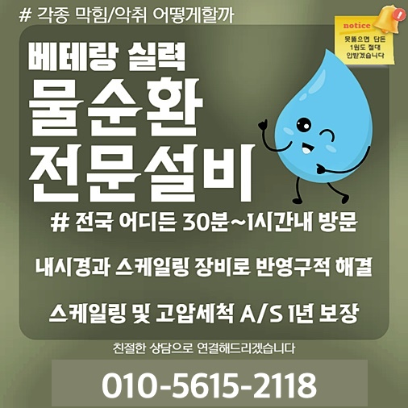

🏠 일산 탄현동화장실하수구막힘 가좌동 냄새차단 출장수리
용인시 처인구 배관막힘 전문 시공 후기

📋 작업 개요
- 위치: 용인시 처인구, 수원시 영통구, 화성시 동탄
- 서비스 유형: 배관막힘, 고압세척, 내시경점검
- 작업 일시:
- 업체명: 하수구수사대 (010-5615-2118)
🔍 문제 상황
일산 탄현동화장실하수구막힘 가좌동 냄새차단 출장수리
어느날 APT에 사시는 고객이 싱크대쪽이 막혀 진단을 요청하였죠
싱크대의 경우 세척이나 조리 중에 음식잔해나 기름들이 내부로 배출되는 경우들이 자주 일어납니다
안쪽에서부터 잔해들이 누적되며 물빠짐을 저하시키는데 일조합니다
주기성을 갖추고 점검해주며 관리해주는게 우선인데 신경쓰며 진행시키는게 쉽지않아 증상이 성큼 다가온다면 조속히 전문인에게 의뢰해 대응하는게 좋아요
문제장소에 내방하여 내시경장비를 가용시켜 하수관의 상황을 봅니다
오늘과같이 막혀버리는 증세가 생겨났다면 내부는 하수들이 넘실거릴 가능성들이 높답니다
예상한것과 같이 입구부터 고여버려 내측의 오염물의 모습을 제대로 알기엔 쉽지 않은 상황이였어요
그리하여 초입부분에 오수들을 제거하고 배수구를 내시경기를 가용시켜 살펴보았습니다
관찰되는 부분에서부터 하수나 잔재들을 조속히 청소하고자 할땐 석션기처럼 필요한것도 없답니다
흡입능력을 발휘한 뒤 시야에 방해되는 것들을 빨아당겨 청소해주죠

🔎 원인 분석
💡 전문가 진단: 정밀 진단 장비를 사용하여 슬러지의 고착 여부를 판명하고 타격/세척 작업을 실시했습니다.
그럼에도 불구하고 고착되었다거나 표면에 흡착된 기름까지 청소하는데엔 주 목적이 달라 샤프트장비와 병행하면 효과가 크게 나타나요
우선 육안으로 보이는 곳부터 남아있던 하수를 청소해주려는 심산으로 석션기기를 이용시켜 청소해주고 하수관을 내시경장치 이용에 들어갔어요
내시경장치의 선을 하수관로의 내측부로 투입해 확인했더니 대량의 기름들이 존재했어요
일상을 영위하시면서 싱크대쪽을 이용하시면서 조리기구들이나 기름성분이 잔뜩 있는 접시를 세척해줄때 기름류들을 꼼꼼히 제거하고 설거지들을 실시하는 사례가 얼마나 계신다고 생각하시나요?
기름들이 제거되지 않은 접시를 닦아낼 떄 기름류가 배수통 너머의 하수도에 그대로 흘러가요
이후에 내부에서 굳게되며 딱딱한 이물들로 변하는데요
기름들은 온수에는 녹겠으나 슬러지와 같이 고착화가 이뤄졌다면 온수들도 큰 효과는 없습니다
해당 까닭으로 인하여 문제를 해결하고자 필요해지는것이 샤프트장비를 운용한 작업입니다
샤프트기기의 헤드쪽의 사슬들이 하수도를 통과하며 원운동을 통해 흡착물을 없애는데요
이 과정들을 지속하면 군데군데 축적된 기름과 이물이 떨어져나가는데요
유사하게 장치의 장비는 내시경카메라와 같이 케이블들로 구성되어있는 형태에요

🔧 작업 과정
그러하기에 샤프트기의 장비와 내시경장치의 호스들이 한번에 투입되요
배수로의 모습을 여기저기 관찰해주며 막혀버린 증세를 바로잡기에 효율성 높은 세척이 진행되는데요
막히게된 오류들이 발생되는 이유들은 한가지가 아니지만 그 가운데 기름류들이 배수관의 지나치는 공간들도 막아버리면서 문제되는 현상이 종종 발생됩니다
이만큼 기름성분이 결함이 된다는 사실을 보여주는데 쌓이는 고착물을 관련 부품을 개선시켜 크게 저하시키는건 아닙니다
그러므로 보통 때에 개수대를 이용하시면서 기름이라 함은 최대한 닦아주고 설거지들을 실시해주는게 중요해요
그리고 주기성을 갖추고 배수관로로 60도 정도의 물들을 부으면서 기름들이 내부에서 안쌓이게 조치한다면 문제를 피하는데 도움이됩니다
지속하여 샤프트기기의 작업을 반복하면 스트레스를 야기하던 기름잔해와 잔해들이 청결하게 없어진것을 확인했죠
작업이 끝났다면 즉시 내시경기기를 통하여 여기저기 체크할 수 있기에 의뢰자로 하여금 안심할 수 있겠습니다
미래에 막히는 증상이 생겨나지 않도록 청소방법과 주의사항도 일러드리고 있으므로 다시 결함이 재발될 수 없게 이용하시는 분이 신경써서 관리하는 게 좋답니다
그리고 트랩부품도 안정적으로 결합시켰어요
해당 트랩은 이물이 하수도로 곧이 곧대로 가지않게 막는 효과를 지니고있고 빠른 배수들을 진행시키기에 상당수 찾고있는 부품이죠
그럼에도 불구하고 트랩연결부에 잔해물이 축적되면 증세들이 재발하게 되니 주기성을 갖추고 청소들을 진행해주며 세척을 진행하는게 가장 큰 도움이 된다 말씀드렸죠
설치들이 종료된다면 호스들과 하수관로에 틈이 생기지않게 접착시켰어요
연결부분에서 틈새가 생긴다면 악취들이 생활공간으로 퍼져 불편들은 가중될 수 밖에 없어요
그러하기에 최대한 오차없이 연결해주었는데요
이번 고객님댁에서 빠져나온 잔해의 모습인데요
생각했던 것과 달리 상당수의 슬러지들이 배수관에서 쌓여있던 모습이라 작업기간도 예상보단 더 걸렸죠
허나 시간들이 늦게까지 걸려도 원인들을 시정해내도록 지속적으로 노력을 거듭해요


✅ 작업 완료
하수가 신속히 배출되는 모습도 고객과 체크해보고 저희의 전문가들은 주변까지 정리해드리고 돌아갔습니다
주방 배수구가 제 기능을 못한다면 원인들은 주로 깊숙한 지점서 잔해들이나 기름들이 쌓여있는 경우입니다
그러나 구조들이나 하수관로의 상태에 그리하여 달라질 수 있어서 전문업체를 불러 해결을 받아보고 바로잡는게 중요하겠습니다
완전한 해결이 필요할 경우 편하실때 전화주시면 됩니다
의뢰자가 계신 장소로 조속히 내방하겠습니다!



⚠️ 하수구 배관 막힘 예방 및 관리 가이드
- ✅ 머리카락, 비닐, 물티슈 등 물에 분해되지 않는 이물질은 절대 흘려보내지 마세요.
- ✅ 기름기 많은 식기는 설거지 전 키친타올로 먼저 기름때를 닦아내세요.
- ✅ 주기적으로 배수구에 뜨거운 물을 가득 부어주어 유지방 고착을 방지하세요.
- ✅ 작업 후 1년 이내 재발 시 무상 A/S 보증 서비스를 제공합니다.
💡 핵심 정리
- 확실한 장비 작업(내시경 점검 및 샤프트 스케일링)으로 원인을 뿌리 뽑습니다.
- 작업 후 1년 이내에 동일한 부위 재발 시 100% 무상 A/S 서비스를 보장합니다.
- 서울 · 경기 · 인천 전 지역에 24시간 언제든 긴급 출동할 수 있도록 항시 대기 중입니다.
❓ 자주 묻는 질문 (FAQ)
🚨 용인시 처인구 배관막힘 문제로 고민이신가요?
정확한 원인 진단과 확실한 시공으로 재발 없는 해결을 약속드립니다.
24시간 긴급 출동 | 서울 · 경기 · 인천 전지역 | 1년 내 재발 시 무상 A/S